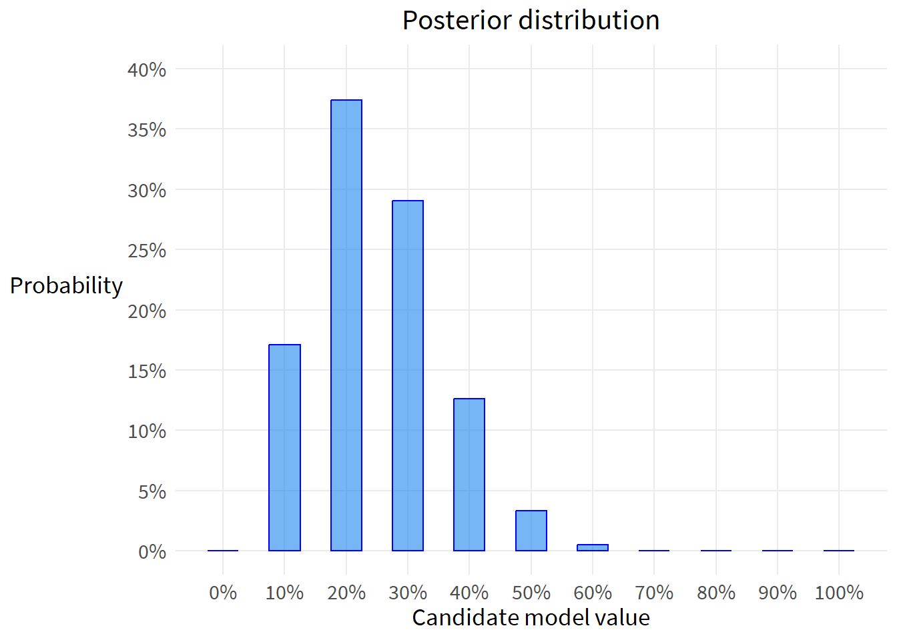
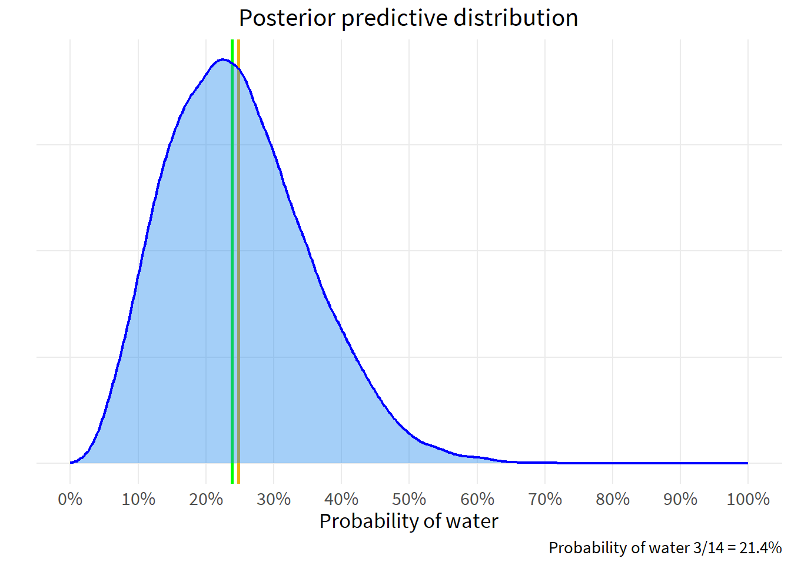

include_graphics("venn-last.png")
Week 1 lecture notes
The frequentist approach to inference:
\(P(data|model)\)
The Bayesian approach to inference:
\(P(model|data)\)
What are each of these expressions saying?
How would you summarize the different approaches narratively?
What estimation approach is used both by the frequentists and the Bayesians?
Let’s derive the Bayes’ Rule, drawing primarily from Oscar Bonilla.
Consider two overlapping events A and B occurring within a universe U.
include_graphics("venn-last.png")
Let’s agree that the probability of something is how often it occurs. So in the Venn diagram above:
\(P(A)=\frac{A}{U}\)
\(P(AB)=\frac{AB}{U}\)
What if we shifted our question to ask, how much of A is in B? Our new universe is now B, and we’re interested in the overlap of A and B as a proportion of B. In the language of probability, for “how much of A is in B” we say “what is the probability of A, given B?” In notation, we write that as \(A|B\). This gives us:
\(P(A|B)=\frac{P(AB)}{P(B)}\)
Let’s solve for \(P(AB)\):
\(P(AB)=P(A|B)P(B)\)
Now let’s ask, how much of B is in A? In probability language, what is the probability of B, given A?
\(P(B|A)=\frac{P(AB)}{P(A)}\)
Solve for \(P(AB)\):
\(P(AB)=P(B|A)P(A)\)
The joint probability of A and B is the same whether you are asking about the proportion of A in B, or the proportion of B in A. Now as a simple algebraic trick, put the two identities together and solve for \(A|B\):
\(P(A|B)P(B)=P(B|A)P(A)\)
\(P(A|B)=\frac{P(B|A)P(A)}{P(B)}\)
And that’s it. That’s Bayes’ Rule.
Now let’s interpret Bayes’ Rule in terms of a data analysis. We want to estimate the probability of a hypothesized cause, given its observed effect. The hypothesized cause is our model of what’s happening. The observed effect is the set of data that we have collected.
\(P(model|data)=\frac{P(data|model)P(model)}{P(data)}\)
To express this narratively, we might say that we have some observed data and we want to estimate the probability of various causes of what we observed. That’s \(P(model|data)\). We look at our data and ask, how often would we see such data, if one of our hypothesized causes were true? That’s \(P(data|model)\), and is referred to as the likelihood of a proposed model, given the observed data. The likelihood of a proposed model given the observed data is scaled by how often that hypothesized cause occurs (\(P(model)\)). Note that \(P(model)\) incorporates information that is outside of our statistical framework. We call \(P(model)\) our prior probability. We multiply the likelihood of a model (given the observed data) by the overall incidence of that model (\(P(model)\), our prior).
We then normalize the numerator of the expression to a probability. That normalizing constant is \(P(data)\) and doesn’t really have a substantive interpretation other than to say it’s the average probability of your data which has the effect of converting your output into a probability.
Practice:
Consider the following table:
cp <- data.frame(x=c(1000,1500,2000),
y10=c(.802,.687, .456),
y20=c(.103, .172, .312),
y30=c(.034,.071, .124),
y40=c(.06,.071,.108),
p_x=c(.116, .099, .785))
flextable(cp)x | y10 | y20 | y30 | y40 | p_x |
|---|---|---|---|---|---|
1,000 | 0.802 | 0.103 | 0.034 | 0.060 | 0.116 |
1,500 | 0.687 | 0.172 | 0.071 | 0.071 | 0.099 |
2,000 | 0.456 | 0.312 | 0.124 | 0.108 | 0.785 |
The variable X takes on the values 1000, 1500, 2000
The variable Y takes on the values 10, 20, 30, 40
Of all elements with x=1000, 80 percent have a y value of 10. In probability notation:
\(P(y=10|x=1000)=80.2\%\)
Note that this is a specific instantiation of \(P(Y|X)\), where X and Y take on specific values. What expression did we derive for \(P(Y|X)\)?
Units with x=1000 make up 11.6 percent of the sample. \(P(x=1000)=11.6\%\)
Based on this information, what proportion of the total sample has an x value 1000 and y value of 10?
In probability language, this is the joint probability of X and Y, which is \(P(XY)\) or, more formally, \(P(X\cap Y)\). What expression did we derive for \(P(XY)\)?
Using the expression for \(P(XY)\) and information in the table provided above, do the following calculations:
\(P(x=1000 \cap y=40)\)
\(P(x=2000\cap y=20)\)
\(P(x=1500\cap y=30)\)
Now consider another table:
bp <- data.frame(x=c(1000,1500,2000, "p_y"),
"y:10"=c(.093, .068, .358, .519),
`y:20`=c(.012, .017, .245, .274),
`y:30`=c(.004, .007, .097, .108),
`y:40`=c(.007, .007, .085, .099),
`p_x`=c(.116, .099, .785, NA))
bp %>%
flextable()x | y.10 | y.20 | y.30 | y.40 | p_x |
|---|---|---|---|---|---|
1000 | 0.093 | 0.012 | 0.004 | 0.007 | 0.116 |
1500 | 0.068 | 0.017 | 0.007 | 0.007 | 0.099 |
2000 | 0.358 | 0.245 | 0.097 | 0.085 | 0.785 |
p_y | 0.519 | 0.274 | 0.108 | 0.099 |
sum(bp[1:3, 2:5])[1] 1sum(bp[4,2:5])[1] 1sum(bp[,6], na.rm=T)[1] 1The probability of x=1000 and y=20 is 1.2 percent. \(P(y=20\cap x=1000)=1.2\%\)
Among units with x=1000, what proportion have y=20? As mentioned above, this is a specific instantiation of \(P(Y|X)\)
Using the expression for \(P(Y|X)\) and information in the table above, do the following calculations:
\(P(y=20|x=1000)\)
\(P(y=40|x=2000)\)
\(P(y=10|x=1500)\)
Consider a randomly assigned treatment to 20 subjects, and 20 subjects without the treatment
The treatment is expected to reduce the probability of an event. The 40 subjects are observed for a given period of time, and the incidence of events is observed for each group.
For any events that occur during this period, what is the probability p that the event occurred within the treatment group?
p = probability of the event originating from the treatment group
\(H_0: p=50\%\) The event is equally likely to have occurred in the treatment or control group, signifying no treatment effect
\(H_1: p \lt 50\%\) The event is equally likely to have occurred in the treatment or control group, signifying no treatment effect
Alternative hypothesis: p<50%. The event is less likely to have come from the treatment group than the control group, signifying a treatment effect
For the period under observation, there were 20 events - 4 events in the treatment group and 16 events in the control group.
How likely are these four events to have occurred within the treatment group?
We may consider the twenty events as the number of trials, and the four events in the treatment group as the number of ‘successes’ of these 20 trials.
dbinom(x=0:4, # we consider the probabilities for all possibilities up to four
size=20,
prob=.5) %>%
sum()[1] 0.00591The probability of observing four or fewer pregnancies, under an assumption of no treatment effect (the null hypothesis), is .0059.
The probability is less than 5%. By convention, we reject the null hypothesis and consider this ‘failure to reject’ to be a piece of evidence in support of the alternative hypothesis.
Recall Bayes’ Rule:
\(P(model|data)=\frac{P(data|model)P(model)}{P(data)}\)
Recall that Bayes’ Rule gives us the probability of a hypothesis (model) given the observed data - that’s \(P(model|data)\)
We refer to \(P(data|model)\) as the likelihood of our data for a given hypothesized model.
We refer to \(P(model)\) as our prior - what we think is the probability of the model absent any observed data.
Finally, \(P(data)\) has no substantive interpretation, it’s just a normalizing constant
Under a Bayesian framework, the null hypothesis remains the same, but we search the model space for the most likely value given the observed data.
What would be a sensible range of plausible values? Let’s say that the range of possible probabilities would be 10% to 90%. So we’ll set our model space:
p <- seq(from=.1,
to=.9,
by=.1)
p[1] 0.1 0.2 0.3 0.4 0.5 0.6 0.7 0.8 0.9Now that we have our model space and observed data, we can calculate the likelihoods. We ask how often our observed data occur for each of our candidate models.
options(digits=3, scipen=10)
likelihood <- dbinom(x=4,
size=20,
prob=p)
likelihood %>%
round(4)[1] 0.0898 0.2182 0.1304 0.0350 0.0046 0.0003 0.0000 0.0000 0.0000After we set our model space, we need to establish our priors
For each of the possible models, which ones do we think are more likely to be true?
Well, we don’t know if the treatment works, so we should probably put the most weight on our null hypothesis of no effect. In this specific setup, a null hypothesis of no treatment effect is 50% - the event could just as easily have occurred in the treatment group as in the control group.
Now let’s suppose that there may be some small chance that the treatment has the desired effect. Let’s also suppose that there may be some small chance that the treatment has the opposite effect of what it is intended to do. We might think a positive treatment effect is more likely than a negative treatment effect. But to be fully agnostic and honest about our experiment, we will weight both scenarios equally.
Putting most weight on the null hypothesis of 50% and small weight equally distributed on the possibility of a positive or negative treatment effect, might look like this:
prior <- c(rep(.06,4), .52, rep(.06,4))
prior[1] 0.06 0.06 0.06 0.06 0.52 0.06 0.06 0.06 0.06Narratively, we might express our priors as saying that we are inclined to believe that there is no treatment effect, but we are willing to entertain the possibility that the treatment may have a positive or negative effect.
We are now ready to calculate the numerator in Bayes’ Rule. We simply multiply the likelihood by its corresponding prior.
numerator <- likelihood*prior
numerator %>%
round(3)[1] 0.005 0.013 0.008 0.002 0.002 0.000 0.000 0.000 0.000The last step is to normalize our numerator values into a set of probabilities.
denominator <- sum(numerator)
posterior <- numerator / denominator
posterior %>%
round(4)[1] 0.1748 0.4248 0.2539 0.0681 0.0780 0.0005 0.0000 0.0000 0.0000Let’s put all this together in a summary table.
out <- data.frame(p, likelihood, prior, numerator, posterior) %>%
round(3)
flextable(out)p | likelihood | prior | numerator | posterior |
|---|---|---|---|---|
0.1 | 0.090 | 0.06 | 0.005 | 0.175 |
0.2 | 0.218 | 0.06 | 0.013 | 0.425 |
0.3 | 0.130 | 0.06 | 0.008 | 0.254 |
0.4 | 0.035 | 0.06 | 0.002 | 0.068 |
0.5 | 0.005 | 0.52 | 0.002 | 0.078 |
0.6 | 0.000 | 0.06 | 0.000 | 0.001 |
0.7 | 0.000 | 0.06 | 0.000 | 0.000 |
0.8 | 0.000 | 0.06 | 0.000 | 0.000 |
0.9 | 0.000 | 0.06 | 0.000 | 0.000 |
ggplot(out, aes(x=p)) +
geom_col(aes(y=posterior),
width=.05,
color="blue",
fill="dodgerblue2",
alpha=.6) +
geom_col(aes(y=prior),
width=.05,
color="green",
fill="lightgreen",
alpha=.6) +
scale_x_continuous(breaks=seq(.1,.9,.1),
labels=percent_format(accuracy=1)) +
scale_y_continuous(limits=c(0,.55),
breaks=seq(0,.55,.05),
labels=percent_format(accuracy=1)) +
labs(x="Candidate model value",
y="Probability",
title="Probability of candidate model values<br>
<span style='color:#1c86ee;'>Posterior distribution</span>
<span style='color:#90ee90;'>Prior distribution</span>") +
theme(axis.title.y=element_text(angle=0, vjust=.55),
plot.title=element_markdown())This is just to get our thinking started, because it’s nothing other than counting. If event A could occur three different ways, and event B could occur two different ways, then the total number of ways events A and B can occur together is 3x2=6.
This principle generalizes to m x n ways for events A and B to co-occur. This principle holds for sequential events as well. For both cases, the events must be independent and not change in any way across the course of the calculations.
A permutation is a rearrangement of the order of a sequence. Consider the letters a, b, c, d. How many different ways can they be ordered?
We can brute force this.
per <- read_excel("permutation practice.xlsx",
sheet="permutations")
flextable(per)A | B | C | D |
|---|---|---|---|
abcd | bacd | cabd | dabc |
abdc | badc | cadb | dacb |
acbd | bcad | cbad | dbac |
acdb | bcda | cbda | dbca |
adbc | bdac | cdab | dcab |
adcb | bdca | cdba | dcba |
Each of the four starting letters has six possible orderings.
4x6=24
Another derivation would be to note that there are four possible selections of the first letter. After the first letter has been selected, three possible letters remain. After the first two letters are selected, two letters remain. After three letters have been selected, there is only one letter left.
By the counting rule, the number of possible orderings is 4x3x2x1 = 24
Note that this is n(n-1)(n-2)… = n!
4! = 24
What if there is repetition in the orderings? How many different ordered arrangements are possible with the sequence s, e, l, l?
here()[1] "C:/Users/dan.killian/Documents/StatisticalRethinking"include_graphics("perms with dupes.png")
There are 4! = 24 different permutations, if the items were unique
There are 2! = 2 repeating letter combinations
The unique orderings are 4! / 2! = 12
Another example: How many different letter arrangements can be formed from the letters P E P P E R ?
There are 6! = 720 permutations if the items were unique
There are 3! = 6 repeating combinations of the letter P
There are 2! = 2 repeating combinations of the letter E
There are 3!2! = 12 combinations of P and E duplicates
The number of unique orderings is 6! / 3!2! = 6x5x4 / 2x1 = 60 unique orderings
How many groups of three can be chosen from a set of five?
pg <- data.frame(num=1:12,
A = c("abc",
"abd",
"abe",
"acb",
"acd",
"ace",
"adb",
"adc",
"ade",
"aeb",
"aec",
"aed"),
B=NA, C=NA, D=NA, E=NA)
flextable(pg)num | A | B | C | D | E |
|---|---|---|---|---|---|
1 | abc | ||||
2 | abd | ||||
3 | abe | ||||
4 | acb | ||||
5 | acd | ||||
6 | ace | ||||
7 | adb | ||||
8 | adc | ||||
9 | ade | ||||
10 | aeb | ||||
11 | aec | ||||
12 | aed |
There are 12x5=60 possible groups of three
Another derivation would be to say that there are five possibilities for the first letter, four possibilities for the second letter, and three possibilities for the third letter.
5x4x3=60 possible groups of three
This can be generalized as \(P(N, K) = \frac{N!}{ (N-K)!}\)
Using the example, \(P(N,K)=\frac{5!}{(5-3!)}=60\) possible groups of three
Continuing the example above, how many groups of three items from a set of five can we select, where the ordering does not matter? We would express this as choose three from five, or choose K from N, which is written as \(\binom{N}{K}\).
If ordering does not matter, then the groups a,b,c and a,c,b would be considered duplicates. Each group can be ordered in K! ways and these would be duplicates. That leaves us with:
\(\binom{N}{K}=\frac{P(N,K)}{K!}\)
Which is more commonly written after substituting in the expression for P(N,K):
\(\binom{N}{K}=\frac{N!}{(N-K)!K!}\)
You could also do a brute force example:
How many groups of three can be formed from the letters a, b, c, d?
include_graphics("comb2.png")There are 4!=24 possible permutations
If ordering does not matter, then there are \(P(N,K)=\frac{N!}{ (N-K)!}=\frac{4!}{(2-2)!}=12\) possible groups of two to be selected from a set of four.
If ordering does matter, then there are \(\binom{N}{K}=\frac{P(N,K)}{K!}=\frac{N!}{(N-K)!K!}=\frac{4!}{(4-2)!2!}=6\)
Permutations may be used to generate test statistics.
Suppose the globe tossing data had turned out to be 3 water and 11 land. Construct the posterior distribution.
Slide 50 starts coding the estimator using the example of a single sample of 6 waters and 3 lands.
Slide 53 provides a function to simulate a set of globe tosses of any probability and number of tosses.
Slide 59 provides a function to compute the posterior, that includes the simulation function as an argument.
Slide 90 simulates the posterior predictive distribution
In reviewing this code, note that the simulation will give you a probabilistic response, while the homework establishes an exact sample of 3 water and 11 land. Let’s modify the code on slide 59 to accept this exact sample.
compute_posterior <- function(W, L,
poss=seq(0,1,len=11)) {
ways <- sapply(poss, function(q) (q*4)^W * (4-4*q)^L)
post <- ways/sum(ways)
bars <- sapply(post, function(q) make_bar(q))
data.frame(poss, ways, post, bars)
}
out <- compute_posterior(W=3,
L=11)
flextable(out)poss | ways | post | bars |
|---|---|---|---|
0.0 | 0.00000 | 0.00000000000 |
|
0.1 | 84,237.89046 | 0.17075463813 | ### |
0.2 | 184,467.44074 | 0.37392521248 | ####### |
0.3 | 143,311.84360 | 0.29050065071 | ###### |
0.4 | 62,328.05962 | 0.12634225772 | ### |
0.5 | 16,384.00000 | 0.03321123043 | # |
0.6 | 2,431.94380 | 0.00492967809 |
|
0.7 | 163.10520 | 0.00033062282 |
|
0.8 | 2.81475 | 0.00000570565 |
|
0.9 | 0.00196 | 0.00000000397 |
|
1.0 | 0.00000 | 0.00000000000 |
|
Just like the example above, plot the posterior distribution
ggplot(out, aes(x=poss)) +
geom_col(aes(y=post),
width=.05,
color="blue",
fill="dodgerblue2",
alpha=.6) +
# geom_col(aes(y=prior),
# width=.05,
# color="green",
# fill="lightgreen",
# alpha=.6) +
scale_x_continuous(breaks=seq(0,1,.1),
labels=percent_format(accuracy=1)) +
scale_y_continuous(limits=c(0,.21),
breaks=seq(0,.2,.05),
labels=percent_format(accuracy=1)) +
labs(x="Candidate model value",
y="Probability",
title="Posterior distribution") +
theme(axis.title.y=element_text(angle=0, vjust=.55))Warning: Removed 2 rows containing missing values (`position_stack()`).
Using the posterior distribution from 1, compute the posterior predictive distribution for the next 5 tosses of the same globe. Use the sampling method.
The posterior predictive distribution is an extraction of data - a simulation - using the probabilities of the posterior distribution. We then examine that posterior predictive distribution to make descriptive statements about our questions of interest.
Recall that we have a sample of 3 land and 11 water. Slide 90 shows how to draw probabilities from the posterior.
post_samples <- rbeta(1e4, 3+1, 11+1)
ggplot(data.frame(x=post_samples), aes(x)) +
geom_vline(xintercept=c(mean(post_samples), median(post_samples)), color=c("darkgoldenrod2", "green"),
size=1) +
geom_density(color="blue",
fill="dodgerblue2",
size=.8,
alpha=.4) +
scale_x_continuous(limits=c(0,1),
breaks=seq(0,1,.1),
labels=percent_format(accuracy=1)) +
theme(axis.text.y=element_blank(),
axis.ticks.y=element_blank()) +
labs(title="Posterior predictive distribution",
x="Probability of water",
y="",
caption="Probability of water 3/14 = 21.4%")Warning: Using `size` aesthetic for lines was deprecated in ggplot2 3.4.0.
ℹ Please use `linewidth` instead.
Now that we have our posterior predictive distribution, we can predict the probability of any p.
W_sim <- rbinom(1e4, size=5, p=post_samples)
ggplot(data.frame(x=W_sim), aes(x)) +
geom_bar(width=.4,
color="blue",
fill="dodgerblue2",
alpha=.6) +
scale_x_continuous(breaks=0:5) +
theme(axis.text.y=element_blank(),
axis.ticks.y=element_blank()) +
labs(x="Counts of water",
y="",
title="Posterior predictive distribution\nfor five additional coin tosses")
Consistent with an expected probability of 11 percent, the most likely outcome of five tosses is 1 water. Zero outomes of water is the second-most likely outcome of five tosses.